在19世纪70年代，市场上出现了一种引人入胜又具有教育意义的玩具，很快它便成为风靡一时的事物，那就是繁花规。它包含一组尺寸不同、边缘有锯齿的小塑料圆轮，以及两个在内边缘和外边缘都有锯齿的大圆环，且在每个小圆轮上离中心不同距离的地方都穿有小孔。如果把一个圆环放在纸上，再放上一个圆轮，使两者的锯齿吻合，然后在一个小孔中插入一支笔。当你沿着圆环移动轮子时，纸上就会出现一条曲线。图4-1所示的是国外的一个繁花规及操作示意图，国内的繁花规虽略有不同，但原理是相同的。
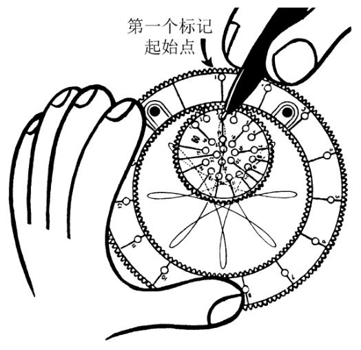
图4-1
《最强大脑》第五季第四期出现了6个由繁花规画出的不同图案，并且这6个图案的中心是合在一起的。屏幕上繁花似锦，眼花缭乱，选手们须逐一分辨出这6个图案的几何参数。
已知半径为R的圆O和半径为r的动圆O1（这里r＜R），当圆O1在圆O内无滑动地滚动时，圆O1上任一点M的轨迹叫作内摆线。
现在来推导内摆线的方程。如图4-2所示，选取直角坐标系，设定圆心O为原点，并且使圆O与x轴正半轴的交点A是轨迹的起点。当圆O1滚动到圆中的任意位置时，点M从初始位置A（R，0）移动到位置（x，y）。设此时两圆的接触点为N。因为r＜R，点O1必在线段ON上，记∠NO1M=t，则大圆的和小圆的的长度都是rt，
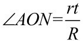
。向量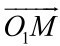
的幅角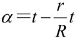
，由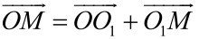
可得，向量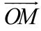
的坐标可表示为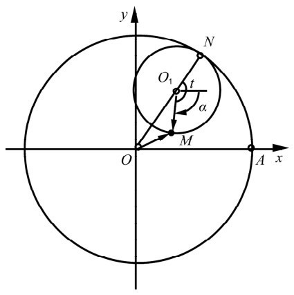
图4-2
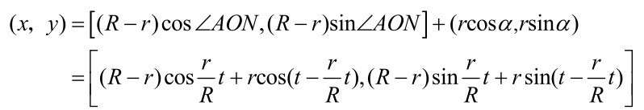
令
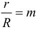
，就得到内摆线的参数方程x= (R-mR)cos(mt)+mRcos(t-mt)
y= (R-mR)sin(mt)+m Rsin(t-mt) (0＜m＜1)
当取0与1之间的不同数时，可以得到各种不同形状的内摆线，如图4-3所示。
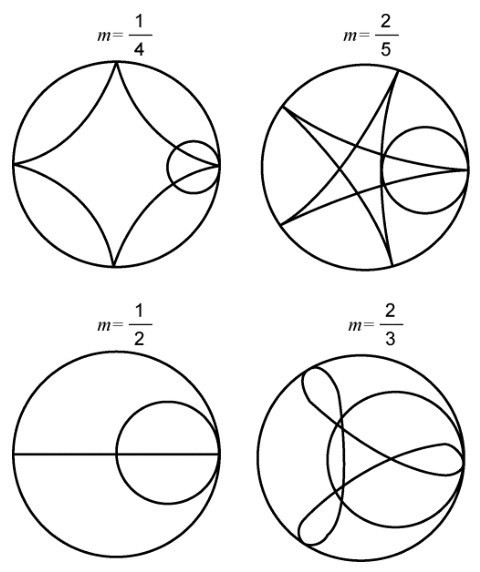
图4-3
细心的读者可能发现，我们在推导内摆线参数方程时，指的是动圆圆圈上点的轨迹。而在用繁花规画曲线时，总是要把铅笔放在动圆上的一个小孔里，所以它不可能是圆圈上的一点。这是不是内摆线轨迹呢？
设r＜R，当半径为r的动圆O1在半径为R的圆O内无滑动地滚动时，在圆O1平面内并与圆O1固定联结但不在圆O1圆周上的一点M的轨迹叫作变幅内摆线。变幅内摆线可分成两类：当点M在圆O1外部时，曲线称为长幅内摆线；当点M在圆O1内部时，称为短幅内摆线。内摆线和变幅内摆线统称为内摆线族曲线。
下面推导变幅内摆线的方程。如图4-4所示，取动圆的圆心O为坐标原点，并且选取x轴的方向，使动圆的圆心落在x轴的正半轴上，此时点M的位置离O点最远。设动圆O1滚动到图4-4中的任意位置，这时点M的坐标是（x, y），并且两圆的切点是N。若记O1M=h，仿内摆线参数方程的求法，可得曲线的参数方程
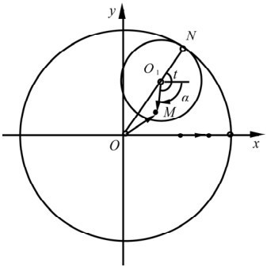
图4-4
x=(R-mR)cos(mt)+hRcos(t-mt)
y=(R-m R)sin(mt)-h Rsin(t-mt) (0＜m＜1)
上式中
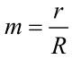
。这里由于0＜r＜R，有0＜m＜1。当h＞m R时，得到长幅内摆线；当h＜m R时，得到短幅内摆线；若h=m R，则得到内摆线。所以，上述方程是内摆线族曲线的统一方程。图4-5中从左至右分别是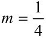
时的长幅内摆线、内摆线（星形线）和短幅内摆线。由此知道，《最强大脑》比赛现场的屏幕上呈现的均是短幅内摆线。
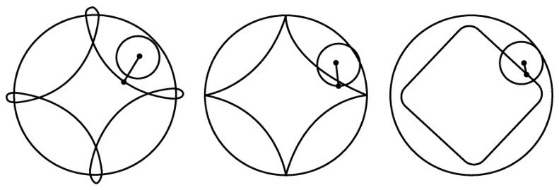
图4-5
当m（设
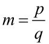
，且p、q互质）小于1即为真分数时，内摆线由q支组成，动圆绕定圆p周后即可返回初始位置，并描完q支内摆线；当m为小于1的无理数时，内摆线有无穷多支，此时无论绕多少圈，它都不能回到初始位置。我们只需观察繁花有几个花瓣，即确定q，因
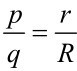
且定圆直径R是已知的，通过估算与q互质的p，r也就得到了。这里还有个经验：花瓣越窄，则r越大；花瓣越宽，则r越小。所以只要选手们了解“短幅内摆线”的几何特性，就很容易胜出。例如图4-1中画出的曲线有8个花瓣（虽然未完整显示），花瓣较窄，可估计p=7。而定圆直径约为32mm，繁花曲线的直径为28mm，符合比例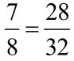
（读者可自己量一下）。当r=R时的内摆线有4个尖角，如图4-5中间的图形，像夜空中光芒四射的星，因此叫作星形线。在内摆线的参数方程中，以
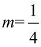
代入，就得到星形线的参数方程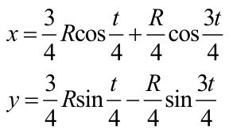
令t=4φ，并利用三倍角公式
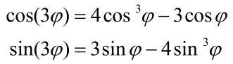
可将星形线的参数方程简化成
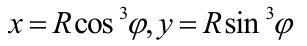
我们可以用画包络图的方式来得到星形线。如图4-6所示，任意作若干条长度为R的线段，使它们的两端分别在x轴和y轴上；然后在每个象限里画一段光滑曲线弧，使它们与这些线段相切，就得到了所要画的星形线。通过简单分析，可知在第一象限内的包络图方程正是
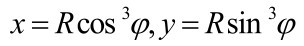
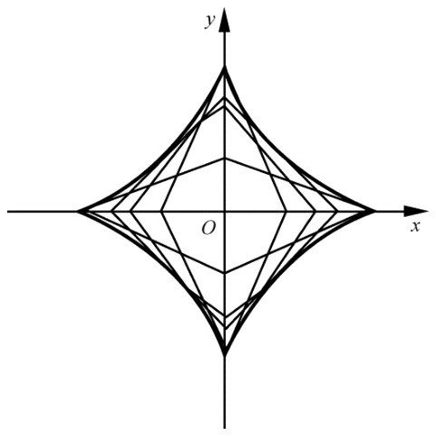
图4-6
大家知道，有一种公共汽车的门很特殊：它是对开的两扇，而且每一扇都由相同的两半用铰链铰接而成。在开门和关门时，靠近门轴的半扇绕着门轴旋转，另外半扇的外端沿着两个门轴的滑槽滑动，开门时一扇车门折拢为半扇，关门时又重新伸展为一扇。
公共汽车采用这种折叠式的车门有一个优点，就是车门开关时所需的活动范围比较小，在上下班高峰时能多载乘客。图4-7是该类车门的简化图， O是门轴，OA=AB=a。取点O为坐标原点，滑槽OB为x轴，延长BA交y轴于点C。在△AOB中，AO=AB，所以∠AOB=∠ABO，又因△BOC是直角三角形，由此推出
∠AOC=90°-∠AOB=90°-∠ABO=∠ACO
故AC=AO=a，因而CB=2a（定长）。根据上述星形线的画法，当定长线段BC的两端分别沿x轴和y轴滑动时，其一切位置的包络正是星形线。由于车门只在第一象限活动，所以动线段BC的包络只是该星形线位于第一象限内的一段；这段弧又被第一象限的分角线分成上下两部分，根据对称性，半边车门AB活动时的包络只是该星形线弧的下半部分。
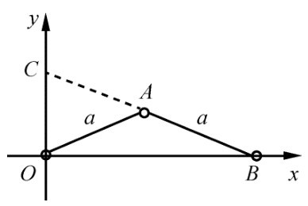
图4-7
由此知道，一扇折叠式车门所需要的活动范围在水平面内的投影是由图4-8中的圆弧、星形线弧和坐标轴围成的区域。其面积可分成3部分：扇形OMN、等腰直角三角形OQN和曲边三角形QNP。可顺次记为S1、S2、S3，容易得到
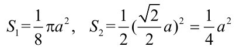
而 S3的计算则要用到积分的一些知识，我们直接写出它的结果
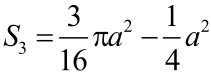
。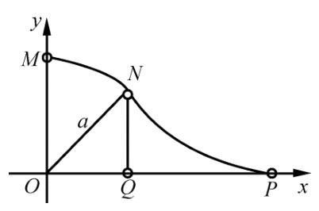
图4-8
总的有
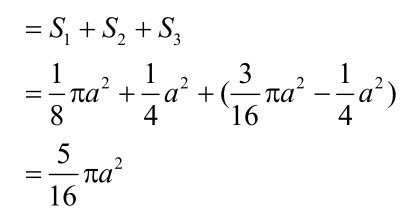
而一扇宽度为2a的普通门所需的面积为πa2（圆面积的
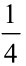
），因而一扇折叠式活门所占的地方只有普通门的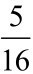
。已知半径为R的定圆O和半径为r的动圆O1，当圆O1在圆O外无滑动地滚动时，圆O1上一点M的轨迹叫作外摆线。
如图4-9所示，用与推导内摆线参数方程相类似的方法，可得外摆线的参数方程是
x=(R+m R)cos(mt)-m Rcos(t+mt)
y=(R+m R)sin(mt)-m Rsin(t+mt)
上式中
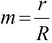
，且为正数。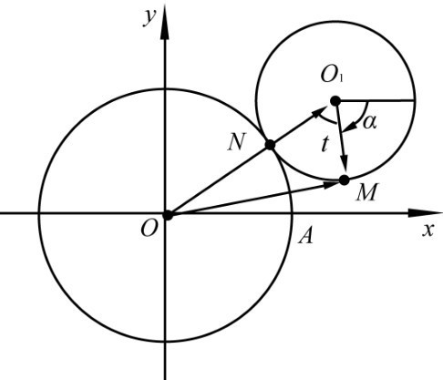
图4-9
类似地，若M是固定在圆O1平面内的一点，但不在圆O1的圆周上。当圆O1在圆O外绕圆O无滑动地滚动时，点M的运动轨迹叫作变幅外摆线。当点M在动圆O1内部时，称为短幅外摆线；当点M在动圆O1外部时，叫作长幅外摆线。
设点M到点O1的距离为h，并令
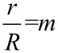
，可得到曲线的参数方程为x=(R+m R)cos(mt)-hcos(t+mt)
y=(R+m R)sin(mt)-hsin(t+mt) (m＞0)
当h＞mR时，曲线为长幅外摆线；反之，当h＜m R时，曲线为短幅外摆线；
当h=m R时，上述方程可化为外摆线方程。故上述方程统称为外摆线族曲线方程。
在图4-10中，从左至右分别是
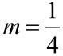
时的长幅外摆线、外摆线和短幅外摆线。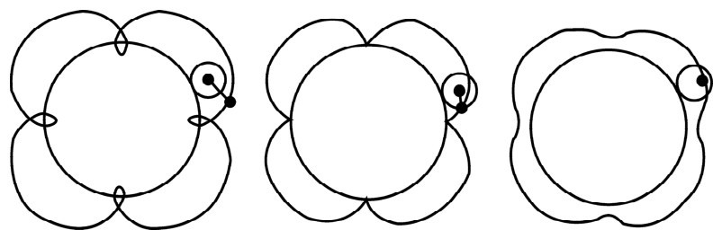
图4-10
我们先回忆一下内摆线族曲线的参数方程
x=(R-mR)cos(mt)+hcos(t-mt)
y=(R-mR)sin(mt) -hsin(t-mt)
其中m值应在0与1之间。现在我们倒过来考虑，从上面的参数方程出发，给出常数R、h和m之后，就可用描点法画出对应的曲线。如果我们在这个方程中令m取大于1的数，结果画出的曲线会是怎样的形状呢？
为此，我们限定m＞1，并令m1=m-1，
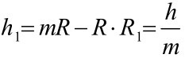
，则有m1＞0，h1＞0，R1＞0，并且m=m1+1，h=mR1=R1+m1R1。将这些关系式代入上面的参数方程中，得到x=-h1cos(t+m1t)+(R1+m1R1)cos(-m1t)
y=-h1sin(t+m1t)-(R1+m1R1)sin(-m1t)
即
x=(R1+m1R1)cos(m1t)-h1cos(t+m1t)
y=(R1+m1R1)sin(m1t)-h1sin(t+m1t)
其中R1、h1和m1都是正数。这正是上面我们讲过的外摆线族曲线方程。进而，当h=mR时，有
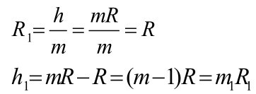
因而这时得到的是外摆线。当h＞mR时，有
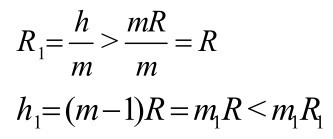
因而这时得到的是短幅外摆线。当h＜mR时，有
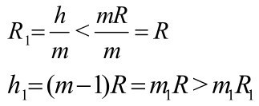
因而这时得到的是长幅外摆线。
由此可见，内外摆线本质上是一家。内摆线族曲线和外摆线族曲线都属于一个更大的曲线族，它们的方程可以统一写成
x=(R-m R)cos(mt)+hcos(t-mt)
y=(R-m R)sin(mt)-hsin(t-mt)
其中R、h、m都是正数。当0＜m＜1时得到内摆线族曲线，m＞1时得到外摆线族曲线，m=1时曲线退缩为一点（h，0）。
上述的定圆在极限情况下可变成直线。当圆C沿着定直线L无滑动地滚动时，动圆圆周上一点M的运动轨迹所形成的曲线叫作摆线（如图4-11所示）。摆线在它与直线L的两个相邻交点之间的部分叫作拱，摆线最高点到定直线的距离（2r）叫作拱高。
如图4-11所示，取定直线L为x轴，并使动圆位于x轴上方。设动圆圆心在y轴上时，点M恰好在坐标原点。记圆的半径为r，则当它滚动到图中位置时，由于
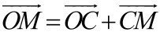
，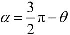
，所以点M的坐标可由向量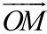
的坐标表示或给出。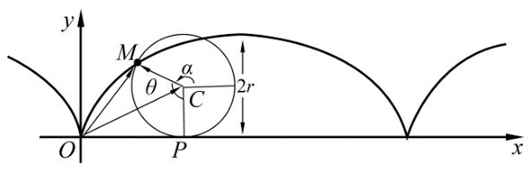
图4-11
(x, y)=(OP, PC)+(CMcosα, CMsinα)
=(rθ, r)+(-rsinθ, -rcosθ)
=(rθ-rsinθ, r-rcosθ)
即M点的坐标是x=r(θ-sinθ)，y=r(1-cosθ)。当θ从0变化到2π时，动点M描绘出摆线的一拱。
当点M不在动圆的圆周上时，点M所画出的曲线叫作变幅摆线。变幅摆线可分成两类：当点M在圆C内部时，曲线称为短幅摆线（如图4-12上图所示）；当点M在圆C外部时，曲线称为长幅摆线（如图4-12下图所示）。
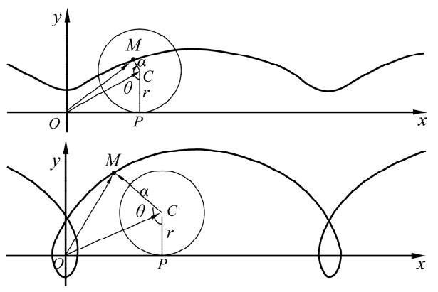
图4-12
变幅摆线的参数方程是
x=rt-a sint，y=r-a cost
当a＜r时得到短幅摆线，a＞r时得到长幅摆线，a=r时为普通摆线。
图4-13中有一个光滑的摆线槽。取一颗钢珠，放在摆线槽中的任意位置（例如图中的M处），当手指松开，滚珠就像荡秋千一样，沿着摆线槽来回摆动。试选择不同的高度松开滚珠，并注意观察滚珠连续两次通过摆线槽最低点K的时间间隔，你就会发现一个奇怪的现象：尽管M点位置的高低不同，但是滚珠每来回摆动一次所花的时间竟没有变！这个性质叫作摆线的等时性，故摆线又称为等时曲线，摆线的这一特性是17世纪荷兰物理学家惠更斯发现的。
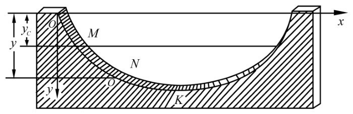
图4-13
通过计算可以得到，滚珠从初始位置点M下降到摆线槽最低点所用的时间是常数π，与初始位置无关。因而不论摆动幅度有多大，滚珠沿摆线槽来回摆动一次所用的时间都相等。
钟摆在滴答声中来回摆动，每次摆动所用的时间必须严格相等才能保证计时的准确性。惠更斯在发现了摆线的等时性以后，就利用它设计出了一种摆线时钟，它的构造如图4-14所示。
把摆锤悬挂在长为4r（摆线半拱的弧长）、能弯曲但不能伸长的细线上，悬挂点的两边各放一块挡板，使挡板的曲线轮廓是拱高为2r的半拱摆线，这样就能保证摆锤沿着图中虚线所示的摆线弧摆动。无论摆幅大小如何，摆锤沿该摆线弧来回摆动一次所用的时间都是
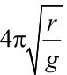
。惠更斯发明的这种摆线时钟一问世便大受欢迎。这种曲线正是由于被应用于改进钟摆，才被正式命名为“摆线”，而惠更斯也因此芳名永留。
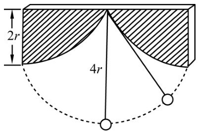
图4-14
1696年6月，瑞士数学家约翰·伯努利在《教师学报》上提出了脍炙人口的所谓“速降线”问题：
A、B两点不在同一直线上，且A点较高，求一条曲线AMB，使得质点仅在自身重力的作用下，沿此路径由A点滑至B点所耗的时间最少。
这个问题看上去是个很普通的极值问题，但只要仔细一分析，就知道它非同寻常。在人们熟知的极值问题中函数是已知的，而现在是不知道函数的表达式，倒过来要求出一种函数，使得整个式子达到极小值。很显然，这是一个崭新的问题。伯努利指出，这一问题暴露了普通几何学的局限性，应由此题为契机，创造出一种崭新的数学方法。
经过一番努力，这个问题还是被解出来了。1697年的春天，《教师学报》上出现了好几篇关于速降线的解答论文，其中伯努利兄弟有两篇，莱布尼兹和洛必达各一篇。答案就是倒放的摆线弧，当质点沿摆线弧滑下时，比任何其他路径都快。
当时牛顿也匿名发表了解答，约翰·伯努利开始并不知道是牛顿的解答，佩服得五体投地，对哥哥雅各布·伯努利说：“我们周围有一头科学的雄狮，这篇速降线的论文只是他露出的一条尾巴。”
正是由于牛顿的匿名，才有了后来关于这一问题发现权的争议和对剽窃者的指责。这样，作为一种结果，摆线一时被贴上了“几何的海玲”的标签。这是一则引自希腊神话的故事，海玲是Zeus与Leda之女，因被Panis所拐而引起了特洛伊战争，所以有“祸根”之意，这里暗指摆线是引发争议的祸根。
随着对速降线等问题的研究，“一种崭新的数学方法”被创造出来了，这种新的数学方法名曰“变分法”。